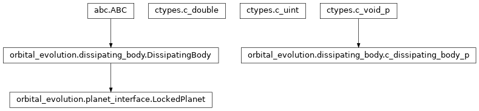
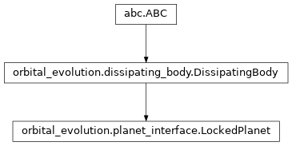

orbital_evolution.planet_interface module¶
Class Inheritance Diagram¶

An interface to the POET planet library.
-
class
orbital_evolution.planet_interface.LockedPlanet(mass, radius)[source]¶ Bases:
orbital_evolution.dissipating_body.DissipatingBodyA class for tidally locked and thus non-dissipative planets.
-
__init__(mass, radius)[source]¶ Create a planet with the given mass and radius.
- Parameters
mass (-) – The mass of the planet in solar masses.
radius (-) – The radius of the planet in solar radii.
Returns: None
-
lib_configure_body= <_FuncPtr object>¶
-